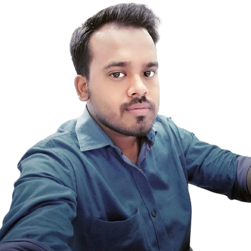

Nirmal Chandra Kunal

Summary
An engineering graduate (B.E) from Pune University having experience with TCS iON (on payroll of Core Integra
Consulting Services Pvt Ltd) seeking rewarding and challenging career growth in the IT field.
Equipped with a web related course certification.
I possess a solid foundation in Linux, HTML, CSS basics, SQL, MYSQL, POSTGRESQL, Python basics.
I am seeking a position where I can leverage my technical expertise and contribute to the success of the organization.
Work Experience
TCS iON (Core Integra)
- Position: Operation Executive
- Time frame: 15th Oct 18 to 5th Feb 21
- Location: Varanasi, U.P
- Job Role:
- To ensure proper monitoring of infrastructure.
- Provide IT support at respective venue for smooth conduction of Online Examination.
- Proper checking of both primary & backup switches before exam day.
- Maintaining & troubleshooting of the network at the exam venue if needed.
- Maintaining LAN cable and I/O port on pre-exam day as well as on exam day.
- Continuous monitoring of network performance & Tomcat Server for smooth completion of exams on time.
- Coordinating with various teams to understand the slippages in a project.
- Conducting a pre-meeting with the team and make them understand the risk involved in the projects.
- Responsible for the post-exam verification process of the banking sector.
Skills
Programming Languages
- HTML
- CSS
- SQL
- MySQL
- Python
- Django Basics
- Rest APIs
Tools
- Postman
- PostgreSQL
- MySQL Workbench
- MS-Office
Operating System
Language
Education
- Bachelor of Engineering (Electrical) 2017, SKN-Sinhgad Institute of Technology & Science, affiliated to Pune University.
- 12th ( PCM) Bihar School Examination Board
- 10th CBSE Board
Awards and Certifications
- Certificate of Appreciation from Regional Operation Manager.
- SQL for Data Analysis: Beginner MySQL Business Intelligence.
- The Complete SQL Bootcamp: Go from Zero to Hero.
- Learn Linux administration and linux command line skills.
Other Information
- Contact Me
- Self Confidence | Problem Solving Skills | Team Work
- Flexible to relocate anywhere
- Team Management | Service-focused